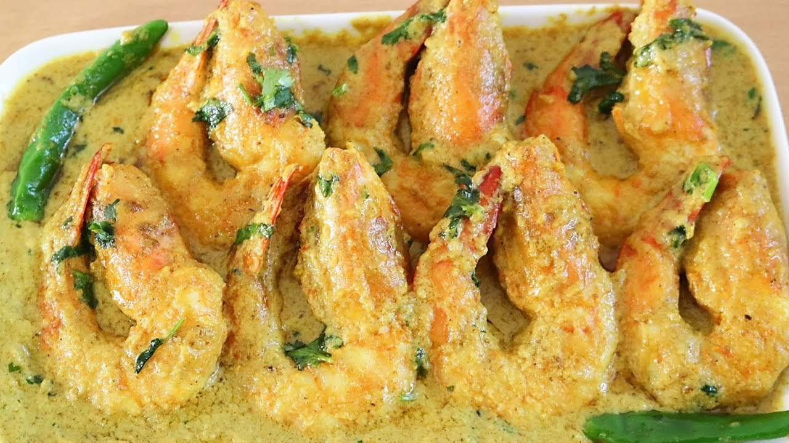

Prawn Malai Curry

Description
A conversasion about traditional Bengali cuisine can never be complete without
prawn malai curry. So if you loved seafood and are in the mood to have something
delicious, this is the recipe you need.
Ingredients
- Prawn 300gms
- Coconut Milk powder, Salt, Turmeric powder
- Bay leaf, Green cardamom, Chinamon, cloves
- Onion(chopped), Garlic(crushed), Ginger paste, tomatoes(chopped)
- Red chilli powder, Sugar, Green chilli, Salt, Mustard oil
Preparation
- Wash the prawns and smear them with a little salt along with ¼ teaspoon of
turmeric powder. Keep them aside. Dissolve the Coconut Milk Powder in warm water.
- Heat the mustard oil in a karahi and add the bay leaf along with the whole
spices. When they start to splutter, add the chopped onion and crushed garlic.
Fry the onions just till they turn light brown in colour.
- Now add the ginger paste, the remaining (¼ teaspoon) turmeric powder and the
red chilli powder. Fry for a minute.
- Add the chopped tomatoes and fry well till cooked. Then, add the marinated
prawns and sauté for 5 minutes.
- Add the prepared Coconut Milk Powder, salt, sugar and green chillies. Let it simmer
for 8-10 minutes, until the prawns are cooked and the gravy thickens
- To finish, add ghee and garam masala powder and remove from fire.